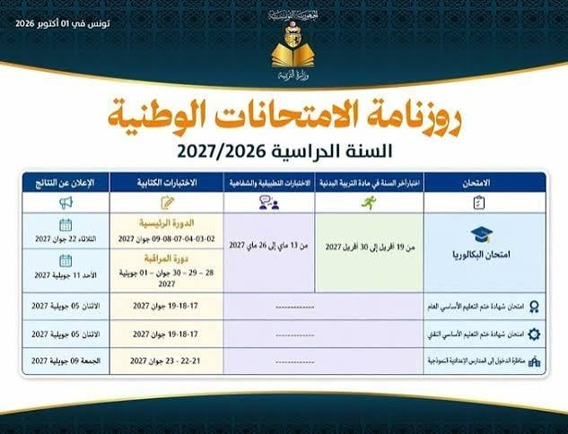
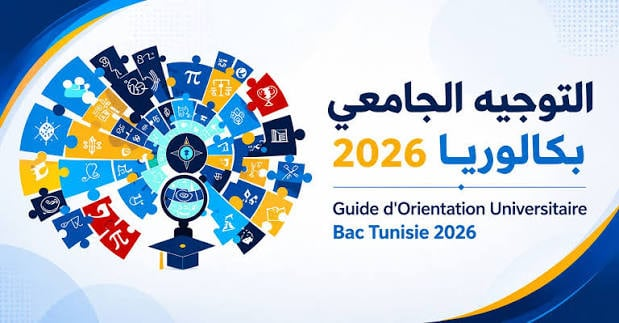

Les inscriptions à distance pour l'examen du baccalauréat débuteront pour les élèves des instituts publics et privés et les candidats individuels ,à partir de lundi 21 octobre 2026 et se poursuitent jusqu'à mardi 19 novembre 2027.